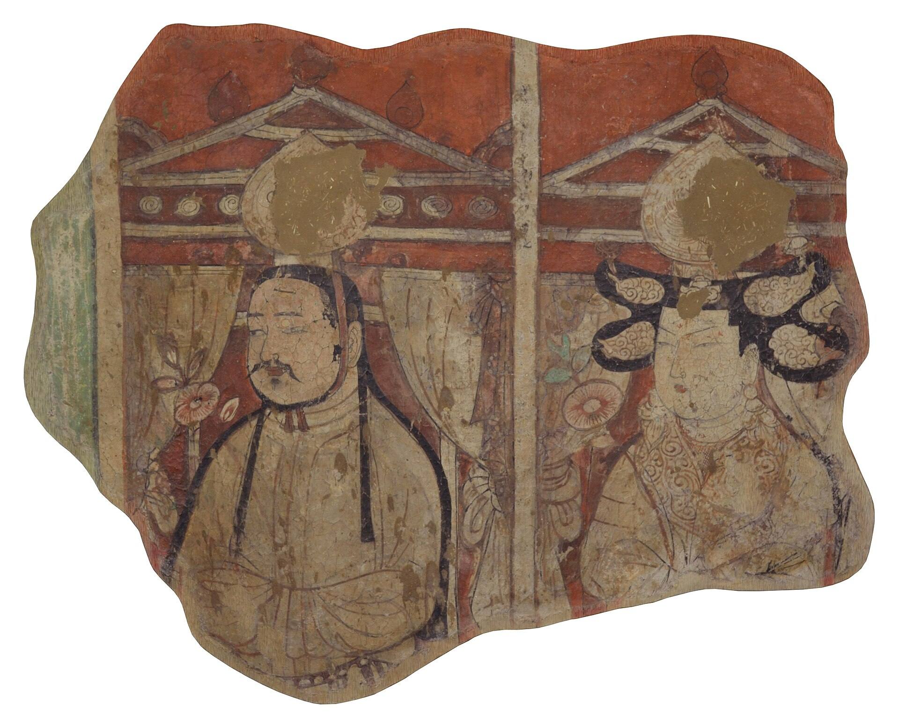

第 13 章
碎片的语法
“此次调查成果以《新疆天山以南的石窟》为题发表于1962年的期刊《文物》上。”
这句话出现在一份修复档案的脚注里。档案本身记录的是1970年代初期大英博物馆对一件来自柏孜克里克千佛洞壁画残片的重新装裱过程，正文只谈技术参数：背板材质、粘合剂配方、色差校正方案。脚注却指向另一份文本——一份诞生于原境的勘查报告，由阎文儒、常书鸿等人组成的西北文化局新疆文物调查工作组在1961年完成。报告里测绘了劫余的洞窟，编号记录了那些被切割后留在墙壁上的矩形空白。
脚注的存在，像是修复师无意间在档案边缘留了一扇窗，窗外是1961年的吐鲁番，窗内是1970年的伦敦。两处之间隔着的不是九年时光，而是一道被切痕定义的鸿沟。
修复档案本身并不常被研究者翻阅。它们躺在博物馆保护部门的铁柜里，编号体系与藏品管理系统平行，彼此之间只有通过馆内备忘录才能建立联系。策展人关心展厅里的最终呈现，学者关心作品的历史信息，而修复师的工作台处于两者之间——它承接的是已经脱离原境的物质碎片，输出的是即将进入审美视野的展品。
这道工序在博物馆的公共叙事中几乎隐形。观众看见的是一尊站姿菩萨像，腰线微曲，右手残缺，左手施无畏印，展签上写着“唐代，约八世纪，砂岩，高一百二十七厘米”。他们看不见的是菩萨像背部那道纵向裂缝曾被何种材料填充，看不见颈部断面的打磨痕迹，也看不见底座下方修复师用铅笔写下的日期缩写。
这些信息属于文物的另一重身份：它作为物质实体的诊疗记录。诊疗记录的语言是克制的。一份典型的修复报告以“状况描述”开头，逐项列出裂隙深度、表面剥落面积、既往修复痕迹。然后进入“处理方案”：清洁方式、加固材料、补全部位的范围界定。最后是“处理后状况”与“保存建议”。整份文件读起来像一份外科手术记录，主语通常是“本修复师”或省略，动词密集而中性——“注入”“填补”“刮除”“覆盖”。
判断藏在这些动词的选择里。“填补”意味着修复师认定缺失部分需要被补全，“保留”则意味着他选择让断裂保持可见。两种选择之间，隔着一整套关于文物本质的观念分歧。
分歧最尖锐的表现，集中在佛像残件的处理上。宾夕法尼亚大学考古与人类学博物馆藏有一尊唐代石雕佛立像，1920年代入藏，来源记录为“中国河北，具体遗址不详”。佛像在入藏前已经身首分离，佛首与躯干分别装箱运抵费城。入藏时的登记照片显示，颈部断面呈不规则斜向断裂，断面表面有浅黄色沉积物，可能是埋藏环境留下的钙质结壳。躯干部分保存相对完整，左手缺失，右手自然下垂，衣纹线条流畅。佛首的面部磨损较重，鼻尖缺损，右耳缺失，但双目微闭的神态仍然清晰可辨。
这尊佛像在宾大博物馆的第一次修复发生在1940年代。当时的修复师面对的核心问题是：是否将佛首与躯干重新连接。从技术角度看，连接是可行的——断面虽然不规则，但两个断口的接触面大致吻合，使用当时已经成熟的金属销钉加固法可以完成连接。问题在于，连接之后，断裂的痕迹是否应该被掩盖。
修复师最终选择了一种折中方案：他用不锈钢销钉将佛首固定在躯干上，但保留了颈部一圈宽约三毫米的接缝，接缝处填入颜色略浅于原石的填充材料，使得连接线在近距离观察时仍然可见。他在修复报告中写道：“保留接缝的目的是标示头部并非原位连接，而是修复干预的结果。”这句话在1940年代的修复伦理中并不常见。同时期欧洲许多博物馆的修复实践倾向于追求视觉完整性，断裂痕迹被视为需要消除的瑕疵。这位修复师的选择，在当时是一种自觉的克制。
克制并未持续。1960年代末，同一尊佛像经历了第二次干预。这次修复的起因是早期填充材料的老化——浅色填充物在二十多年间逐渐变黄，与原有石材的色差加大，接缝在展厅灯光下显得格外扎眼。新一任修复师接手时，策展部门提出了明确要求：佛像作为展厅叙事线的核心展品，其视觉完整性应当优先。
修复档案里夹着一份1968年的馆内备忘录，策展人写道：“参观者对颈部裂缝的询问频率过高，影响了他们对作品本身的欣赏。”这句话将裂缝定义为干扰项，将修复的目标设定为消除干扰。新任修复师拆除了旧填充物，改用与石材颜色更接近的环氧树脂基材料重新填补接缝，并在表面做了仿石纹理处理。修复完成后，颈部连接线在正常观展距离下几乎不可见。佛像呈现出一种近乎完整的姿态，仿佛身首从未分离。
这两次修复之间的差异，构成了一个微缩的观念史。1940年代的修复师将断裂视为历史信息的一部分，选择让它保持可辨识；1960年代的修复师将断裂视为审美障碍，选择让它隐形。前者把文物当作历史证据，后者把它当作审美对象。两种选择都没有被明确宣称为立场——它们只是在修复报告的技术语言中悄然落定，然后凝固成物质形态，成为观众唯一能看见的东西。
修复的物质后果具有不可逆性。环氧树脂一旦固化，就无法在不损伤原石材的情况下完全清除。1960年代那位修复师的技术判断，至今仍然嵌在佛像的颈部。后来的研究者若想观察原始断面，只能依赖1940年代修复前拍摄的黑白照片。
照片保存在博物馆档案室，查找编号需经保护部门批准。照片上的断面纹理清晰，沉积物分布均匀，但照片本身也是选择的结果——它只拍了正面，侧面和背面的断面细节并未记录。这意味着，即便研究者试图通过影像回到修复前的状态，他们能抵达的也只是一个被拍摄角度限定的局部。
类似的情况也出现在壁画残片的修复史上。柏林亚洲艺术博物馆收藏的柏孜克里克壁画残片，在二十世纪初入藏时经历了第一次装裱。勒柯克探险队从吐鲁番割取的壁画块，背面带着凿削痕迹，边缘参差不齐，有些地方泥层与支撑体已经分离。柏林最初的修复方案是将壁画块固定在石膏背板上，边缘用与画面底色相近的灰泥填补，使残片呈现为规整的矩形或正方形，便于悬挂展示。填补部分的面积有时相当大——一幅高约六十厘米的供养人像残片，原画只保存了面部和上半身，下半身及背景全部由灰泥补全。补全部分没有模仿原画的笔触，而是以平涂色块填充，颜色接近原画背景的暖灰调。

这种做法在当时被认为是“可识别原则”的体现：修复部分可以区别于原作，但又不至于刺眼。
问题出在时间上。灰泥的化学成分与唐代壁画使用的黏土、麦秸混合基层完全不同。几十年后，灰泥与原始泥层之间的界面开始出现微裂隙。展厅的温湿度波动导致两种材料以不同速率膨胀收缩，裂隙逐年扩大。到1990年代，部分壁画残片的填补边缘已经出现了肉眼可见的分离，灰泥粉末从缝隙中掉落，在展柜底部积成细小的灰堆。
博物馆在1998年启动了一项系统性的重新修复计划，由一位资深壁画修复师主持。她在项目启动报告中写了一句后来被广泛引用的话：“我们修复的不是壁画本身，而是前人的修复。”这句话点破了一个被长期回避的事实：文物进入博物馆后，它的物质形态是层层叠加的结果——原作的物质层、切割行为的痕迹层、早期修复的干预层、以及现在即将施加的新干预层。每一层都承载着特定时代的技术水平和修复理念，每一层都在改变文物的面貌。所谓“原真性”，不再能锚定在任何一个单一的时刻。
修复师的这句话，后来出现在2003年国际博物馆协会保护委员会的一次专题讨论中。讨论的主题是“修复的修复”——当一个文物上叠加了多次修复干预，后来的修复师应该如何处理前人的干预痕迹。一派观点认为，每次修复都是文物生命史的一部分，应当被尊重和保留；另一派则认为，如果早期修复材料本身已经劣化并对文物造成威胁，就应当被清除。
两派在理论层面各有依据，但在工作台前，修复师面对的不是抽象原则，而是一块正在掉粉的灰泥填补层。她必须做出具体判断：是局部加固，还是整体移除。判断的依据不仅是材料科学的数据，还包括展览计划、预算周期、以及馆方对“作品面貌”的期待。
这种多重力量的交织，在一份2005年的修复备忘录中体现得尤为清晰。备忘录的撰写者是某大型博物馆的亚洲艺术策展人，收件方是保护部门负责人，主题是“唐代观音坐像右臂修复方案”。这尊观音像来自河北响堂山石窟，1920年代经古董商之手流入美国，入藏时右前臂和手部缺失，断面呈不规则椭圆形，表面有凿痕。
策展人在备忘录中提出：“从展厅叙事角度看，缺失的手臂分散了观众对观音面部表情和衣纹线条的注意力。建议考虑补全手臂，以恢复雕塑的整体韵律。”保护部门的回复则更为谨慎：“补全手臂需要确定原有的手臂姿态，而目前缺乏可靠的图像或文献依据。任何基于推测的姿态复原，都可能在学术层面引发争议。”双方通过备忘录往返了三轮，最终达成的妥协方案是：不补全手臂，但将断面做平滑处理，并涂上与整体石色接近的保护层，以降低断面的视觉冲击力。
这个方案本身就是一个微妙的平衡。它没有添加任何推测性的复原，符合保护伦理的底线；但它通过削弱断面的存在感，使缺失变得不那么引人注目。观众看到的是被柔化处理过的残缺，而非原始的断裂痕迹。这种处理方式在博物馆实践中相当普遍，但它所隐含的判断却很少被公开讨论：残缺是需要被管理的，因为它可能干扰审美体验。
修复师的手在断面表面轻轻涂抹保护剂的那一刻，她完成的不仅是一个技术动作，也是一个解释行为——她决定了观众将如何看见这件作品的不完整。
解释行为的痕迹有时会留在文物上，只是需要特定的条件才能发现。大英博物馆藏有一件来自敦煌的唐代绢画残片，画面为观世音菩萨半身像，左下角残缺，绢面有纵向折痕。1970年代的修复档案记录了对其进行的重新装裱：修复师将残片托裱在新的绢底上，残缺部分以补绢填充，补绢的颜色略浅于原绢。档案里特别注明，补绢的边缘在紫外光下可以辨识，这是修复师为未来的研究者留下的识别标记。
但这个标记在正常展厅光线下完全隐形。观众看见的是一幅完整的菩萨像，只有当他们知道紫外光的存在、并且被允许携带紫外光源进入展厅时，才能看见修复的边界。而大多数观众不具备这两个条件。他们接受的是修复后的完整画面，并将其当作作品的本来面貌。
这种信息不对称并非刻意隐瞒。博物馆的展签空间有限，通常只标注年代、材质、来源地和入藏编号，修复史很少被纳入。
即便在学术出版物中，修复干预的记录也往往被压缩为图版说明中的一行小字：“经重新装裱”。装裱前后的差异、补全部分的范围、判断的依据——这些信息留在了保护部门的档案柜里，与展厅之间隔着若干道需要授权才能打开的门。
宾大博物馆那尊唐代佛像的修复档案里，还夹着一张1972年的内部便条。便条是手写的，字迹潦草，内容是关于佛像左手缺失部分的处理建议。前任修复师曾用石膏补全了左手，但石膏的颜色在几年后变深，与砂岩的浅灰色形成反差。便条的撰写者——可能是当时的策展助理——写道：“石膏手的问题在于它看起来像一只戴了深色手套的手。要么换材料重做，要么干脆去掉。”最终的处置是去掉石膏补全件，但保留手腕处的金属销钉，销钉的末端被磨平，与断面齐平。
这个决定在档案里没有进一步的解释，它只是被执行了，然后佛像就以这样的形态进入了展厅：右手完整，左手腕部是一个平滑的金属点，像句子中一个被删去一半的标点。销钉的存在，本身就是一个语法标记。
它标示着这里曾经有过什么，但那个“什么”已经被移除。对于观众而言，这个金属点可能被忽略，也可能被注意到并引发疑问。但展签上不会解释这个金属点是什么，为什么要保留它。它就这样嵌在石头里，成为一个沉默的提示——提示这件作品在进入博物馆之后，仍然在持续地被修改。
修改的驱动力来自多个方向。学术研究可能揭示出新的图像学证据，促使博物馆调整修复方案；展览主题的变化可能使某件文物从库房进入展厅，从而需要对其进行符合展示标准的处理；赞助人的偏好、媒体的关注、乃至外交场合的借展需求，都可能转化为对文物外观的具体要求。修复师的工作台是这些力量的交汇点，所有抽象的讨论最终都落在这里，变成对一块石头、一片绢、一截木头的具体操作。柏林亚洲艺术博物馆那批柏孜克里克壁画残片，在1998年的重新修复中面临一个棘手的问题：早期灰泥填补层的劣化已经不可逆，但完全清除灰泥又可能损伤原始泥层。
修复师最终采用了一种局部加固的方案——在灰泥与原始泥层的界面注入一种低黏度的合成树脂，以稳定裂隙，同时在灰泥表面施加一层薄薄的保护涂层，延缓粉化。她在修复报告中坦率地写道：“这不是一个理想的方案，只是在现有条件下的最优选择。”这句话可以读作修复伦理的诚实自省，也可以读作对博物馆体制的一种温和提示：修复的边界不是由修复师独自划定的，而是由材料的老化速度、预算的审批周期、展览的时间表、以及机构对“可展示性”的定义共同塑造的。
这些因素中，“可展示性”是最具支配力的一项。一件文物如果被认为不适合展示——残缺过于显眼、表面状态不稳定、或者视觉效果不理想——它就可能被留在库房。
库房是博物馆的背面，温度恒定，灯光晦暗，金属柜架排列密集，文物在这里处于一种悬置状态：它们已经被纳入收藏，但尚未进入公共视野。修复是它们从库房走向展厅的必经通道，而通道的宽度由“可展示性”的标准决定。这个标准不是固定的，它随着时代趣味、学术潮流和机构政策而浮动。
一个在1950年代被认为“破损过甚、不宜展出”的佛首，到了1990年代可能因为学界对“残缺美学”的重新评价而被请进展厅。但请进展厅的前提，仍然是修复师对它进行过某种处理——哪怕是极简的清洁和加固。处理之后，它就不再是库房里的那件东西了。它变成了展品。
展品的身份是双重的。它既是历史遗物，承载着原境的信息；也是博物馆的制成品，携带着修复干预的痕迹。这两重身份并不总是和谐共存。
当修复师用合成树脂加固一块壁画残片时，她延长了这件文物的物理寿命，但也在它的物质构成中嵌入了一种二十世纪的化学工业产品。千年之后，如果这件残片仍然存在，未来的研究者将如何理解这种嵌在唐代泥层里的高分子聚合物？它会被视为文物的一部分，还是会被视为需要清除的污染物？这个问题目前没有答案，但它悬在每一次修复干预的上方，像一道尚未被命名的切痕。
切痕是本章无法绕开的母题。在柏孜克里克，切痕是勒柯克留下的锯痕和凿痕；在响堂山，切痕是盗凿者留下的断面；
在博物馆修复室，切痕是修复师决定保留或填补的边界。每一道切痕都是一个语法标记，它标示着文物生命史中的一个断裂点。断裂点的一侧是原境——石窟、寺院、藏经洞；另一侧是再语境化的空间——展厅、库房、拍卖图录。
修复师的工作，从说，是在处理这些切痕的可见性。她可以选择让切痕保持锐利，使其成为叙事的一部分；也可以选择将它柔化，使其融入背景。无论哪种选择，她都在书写一种语法——一种决定碎片如何被阅读的语法。
这种语法在博物馆空间里获得物质形态后，就变得几乎不可更改。宾大佛像颈部的环氧树脂、柏林壁画边缘的合成树脂、大英绢画托裱的补绢——这些材料将特定时代的修复判断固化为永久性的物理特征。后来的修复师可以在此基础上叠加新的干预层，但原始切痕的信息已经被覆盖、被稀释、或者被彻底移除。
覆盖本身也是一种信息，但它记录的不再是文物在原境中的状态，而是文物在博物馆体制中的经历。这两种信息分属不同的时间层，却共存在同一件物质实体上，彼此无法剥离。
这或许就是“碎片的语法”最核心的困境：修复赋予碎片一种可读性，但这种可读性是以牺牲另一些信息的可读性为代价的。当观众站在展厅里，面对一尊被修复过的唐代菩萨像时，他们读到的是一个被修复师、策展人、学术顾问和机构伦理共同编辑过的文本。原初的物质信息仍然存在于石头的深处，但已经无法被肉眼直接触及。它需要借助X射线荧光光谱、红外反射成像、或者修复档案里的黑白照片才能部分还原。而这些技术手段的获取，同样需要跨越一道道门禁。
宾大博物馆档案室走廊尽头的那张老照片还挂在原处。照片拍的是1920年代某处石窟外景，像还在龛中，龛前站着两个穿长袍的人。照片下方没有拍摄者署名。库房里那尊唐代佛像的档案里，夹着一张同一年代的交易记录复印件，上面写着“石雕佛首一件”，但无法确认与本件直接相关。这两份文件之间隔着的不是空气，而是一整段无法用照片接续的时间。
档案深处那份1968年的备忘录，在策展人与保护部门之间往返了不止一次。第一轮回复中，修复师用技术语言表达了保留意见：“环氧树脂基材料虽可调色匹配，但其老化特性与砂岩差异显著。二十至三十年后，填充材料可能再次变色，届时二次干预的难度将远高于当前。”
策展人的回复则绕开了技术问题，直接诉诸展厅效果：“本馆亚洲艺术展厅的照明设计以暖色温为主，颈部浅色接缝在暖光下会形成高光带，打断雕塑从肩部到下颌的视觉连续性。这不是修复伦理问题，而是观看经验问题。”两种语言在备忘录上对峙——一种是材料科学的预见性，一种是展示美学的即时性。它们之间没有翻译，只有各自陈述，然后等待对方让步。
让步最终来自修复师，但她的让步附带了条件。她在1969年3月的第三轮备忘录中写道：“同意采用环氧树脂填补接缝，但要求在修复报告中永久记录本次干预的详细材料配方与操作流程。此外，建议在佛像底座背面刻注修复年份缩写，作为未来研究者的识别标记。”策展人同意了第一个条件，否决了第二个——“底座背面虽不显眼，但仍属展品可见范围，刻注标记将被视为对作品完整性的二次破坏。”
妥协的产物是一行铅笔字。修复师在底座下方——那个只有在佛像被吊起或倾侧时才能看见的平面上——用软铅笔写下“Rest. 1969, ER”，然后涂上一层透明保护胶。这行字至今还在那里，只是几乎没有人看到过它。
它构成了一种奇特的在场：修复干预的痕迹被隐匿在展品的视觉表面，干预的记录被隐匿在展品的物理底面，两者都以不可见的方式存在着，像是被刻意压低的耳语。
耳语并非总是被压制。1998年柏林壁画修复项目启动之初，那位主持修复的资深修复师做了一件在当时看来颇为出格的事：她邀请了一位专攻敦煌学的艺术史学者进入修复室，请她在修复干预开始之前，对壁画残片的切割边缘进行详细的形态学描述。这位学者在修复室里待了三天，用放大镜逐段观察勒柯克留下的锯痕走向、凿削深度、以及泥层断裂面的颗粒结构。
她后来发表了一篇论文，题为《切痕作为文献：柏孜克里克壁画残片边缘形态的考古学观察》。论文的核心论点简单却锋利：切割痕迹不是壁画生命史的终点，而是另一种起点——它们记录了二十世纪初西方探险队在吐鲁番的操作方式、工具类型、以及切割时的环境条件（干燥季节泥层较脆，切割边缘更易出现片状剥落；湿润季节泥层韧性较高，切痕更为平滑）。
这些信息对于理解壁画的原始状态至关重要，因为切割行为本身已经永久性地改变了残片的边界形态，而边界形态正是判断残片在原壁面中位置的关键依据之一。
这篇论文的发表，在博物馆内部引发了一场小规模震动。保护部门认为，修复师邀请外部学者进入修复室，在干预前进行独立记录，实际上是在馆方正式的修复档案之外，建立了一套平行的、不受馆方控制的文献系统。
那位修复师在部门会议上被问及此事时，她的回答被在场的同事记录下来：“修复档案记录的是我们做了什么。她的论文记录的是我们在做之前，残片上还保留着什么。这两种记录不应该互相取代。”
这句话后来在柏林亚洲艺术博物馆内部被反复引用，有时作为修复伦理透明的典范，有时作为修复师越权的证据。但无论评价如何，它揭示了一个结构性事实：修复干预的决定权集中在博物馆手中，而干预前的原始状态信息，一旦被干预覆盖，就只有在馆方授权的档案中才能被追溯。那位修复师邀请外部学者的举动，实际上是在馆方的信息垄断上打开了一道细小的裂缝。
裂缝并未扩大。
那段空间里有搬运工留下的车辙，有报关单上被涂抹的栏目，有拍卖图录里安静的小字，也有修复师在工作台前做出的每一个具体判断。这些判断不像来源记录那样可以被归档为“明确”或“不明”，它们沉淀在文物的物质形态里，成为另一种需要解码的档案。
1998年柏林重新修复项目完成后，那位主持修复的壁画修复师在项目总结的末尾加了一行字。她写道：“本报告所述处理方案的有效期预计为三十年。”这句话不是技术判断，而是一种时间意识。她知道自己的修复干预也会老化，会变成后人的难题。
三十年后，当这批壁画残片再次需要进行“修复的修复”时，后来的修复师将面对的是五层叠加——唐代画师的笔触、勒柯克的锯痕、1920年代柏林的灰泥、1998年的合成树脂、以及时间在所有材料表面留下的氧化与磨损。每一层都携带着自身的语法规则，每一层都在争夺“原真性”的定义权。那行字没有进一步的解释，它就这样结束在报告末尾，像一个被轻轻放下的工具。修复师合上文件夹，把它交还给档案柜。
柜门关上的声音很轻，在恒温恒湿的工作室里几乎听不见。走廊另一头的展厅里，灯光已经调好，壁画残片被固定在新的展板上，切割边缘被柔化处理过，观众即将入场。他们看到的将是一个完整的画面，一段被精心编辑过的叙事。叙事里没有锯痕，没有灰泥粉末，没有那行关于三十年有效期的注解。这些都在别处，在档案柜里，在修复师合上的文件夹中，在文物物质深处那些无法被裸眼阅读的层叠里，安静地等待下一次干预的到来。